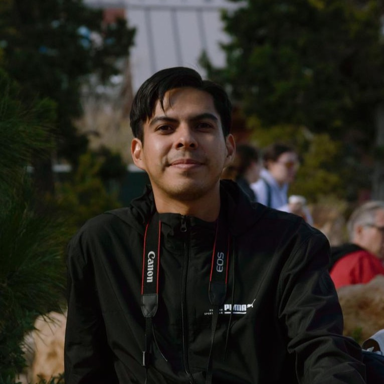
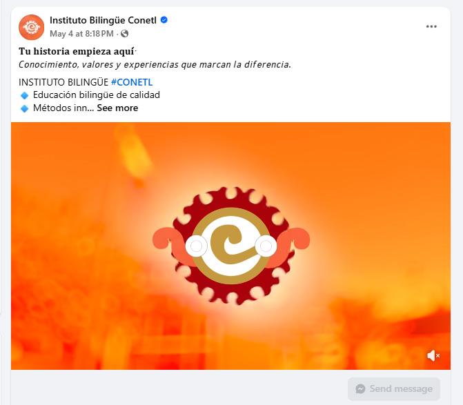
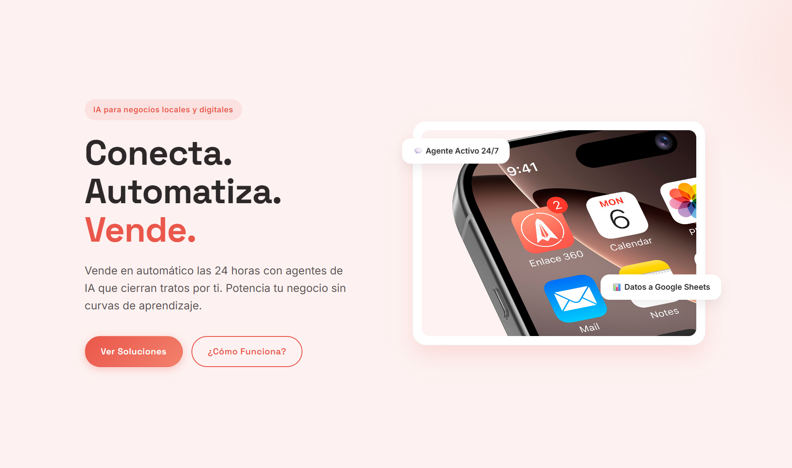
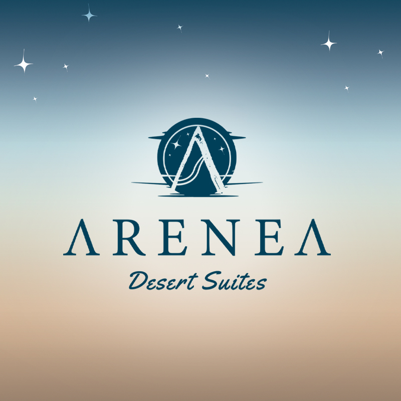
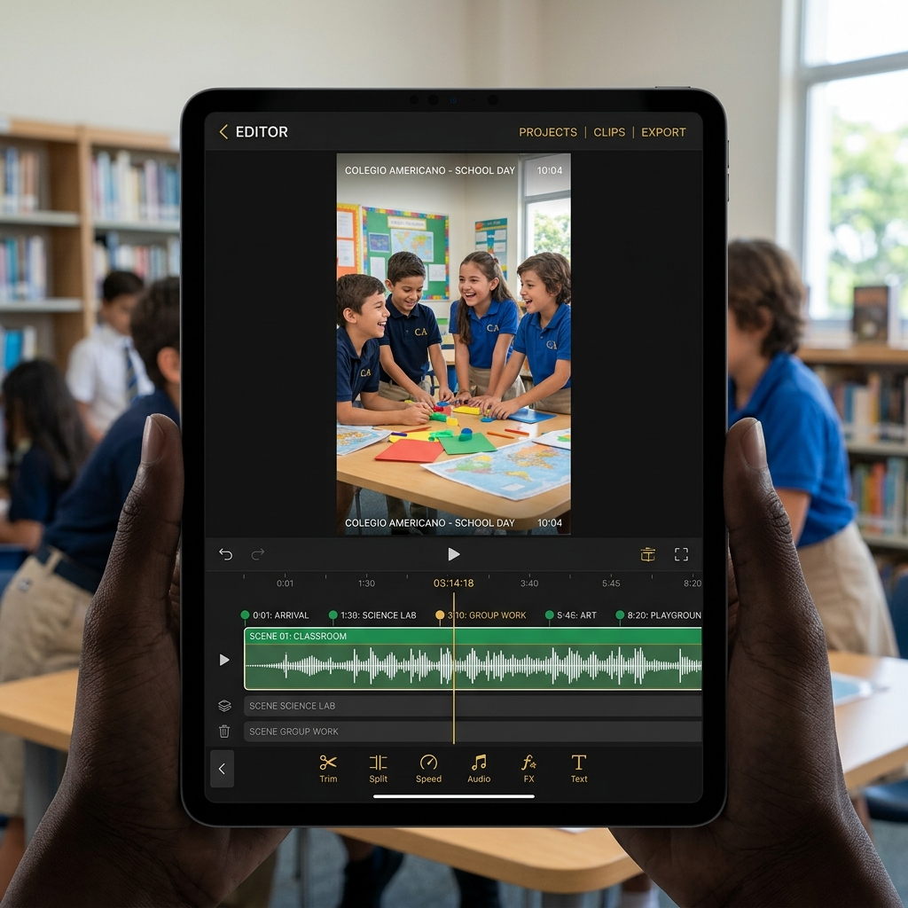
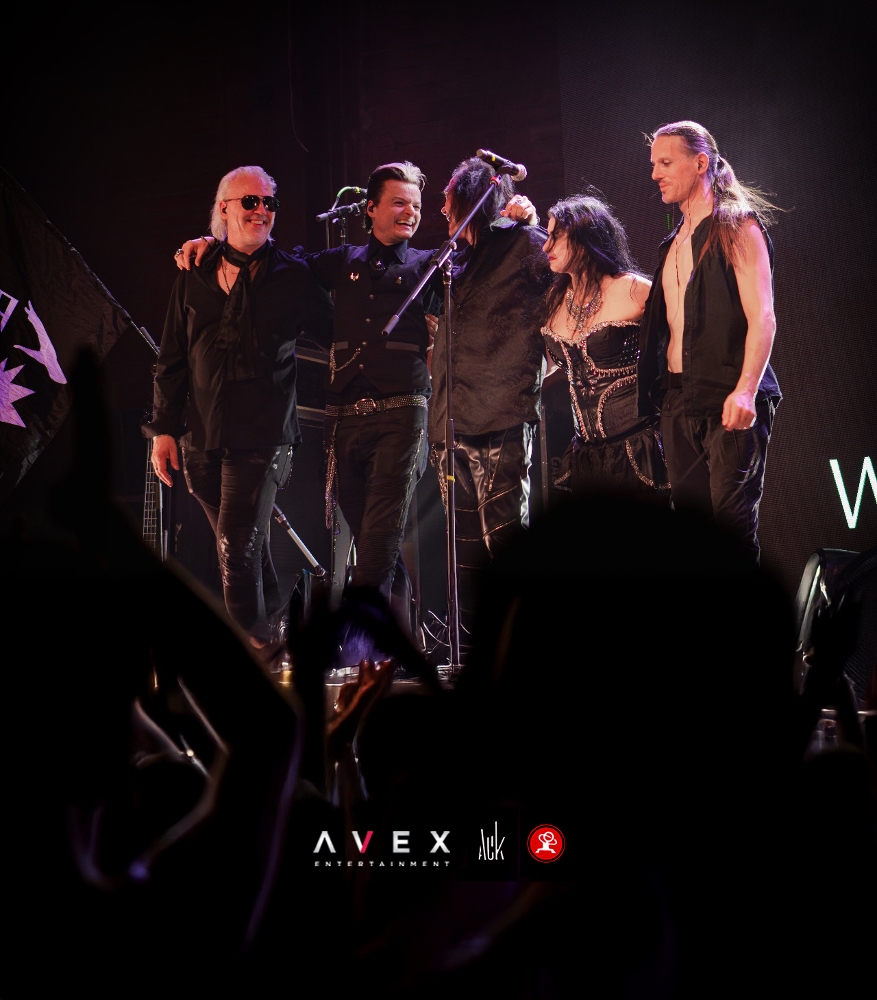

02 HABILIDADES TÉCNICAS
Ecosistema Técnico de Alto Nivel
Creación de Contenido para Redes Sociales

Grabación de Contenido
Captura de material audiovisual con equipos de alto nivel y planeación logística.
Soy Leonardo García, un diseñador de medios interactivos y productor multimedia basado en Ciudad Juárez. Mi trabajo se centra en la intersección entre la estética visual y la eficiencia tecnológica.
No solo construyo marcas; diseño sistemas. Con experiencia liderando esfuerzos de branding, producción audiovisual e incluso la logística de áreas de impresión comercial, entiendo el ciclo completo de un proyecto creativo.
Mi objetivo: crear soluciones visuales que resuelvan problemas reales.

Ecosistema Técnico de Alto Nivel
Captura de material audiovisual con equipos de alto nivel y planeación logística.
El Factor Humano: Liderazgo & Gestión de Valor
Capacidad para dirigir equipos creativos y coordinar flujos técnicos complejos.
Comprensión del objetivo comercial detrás de cada pieza visual o código.
Implementación inmediata de herramientas de vanguardia para optimizar tiempos.
Organización meticulosa de entregables y comunicación clara.
Casos de Éxito y Portafolio Visual

Cliente: Instituto Conetl
Dirección de producción audiovisual para campaña de marketing educativo. Gestión de proyecto que abarca la creación de un guion técnico de 90 segundos, listas de tomas y la aplicación de motion graphics y overlays para resaltar los valores de la institución.

Cliente: Enlace 360
Creación de plataforma interactiva y landing page informativa. Desarrollo web estructurado y responsivo utilizando tecnologías modernas como Next.js y Tailwind CSS para garantizar un rendimiento óptimo y un diseño limpio.
.jpg)
Cliente: Conciertos Locales
Dirección de fotografía y grabación de contenido en vivo para eventos musicales. Uso de técnicas cinematográficas, grabación con perfiles logarítmicos (D-Log M), captura de audio de 32 bits flotantes y flujos de gradación de color profesional en DaVinci Resolve.

Proyecto: Dunas de Samalayuca
Producción audiovisual que combina cinematografía en tierra y tomas aéreas con dron. Captura de paisajes a gran escala en las Dunas de Samalayuca, empleando técnicas de pilotaje de precisión, encuadres dinámicos y una gradación de color optimizada para realzar las texturas e inmensidad del desierto.

Cliente: Colegio Americano
Grabación de contenido en locación y edición dinámica de video especializada para el formato de Reels. Producción enfocada en documentar las actividades de la institución educativa, aplicando técnicas de montaje ágil, optimización de audio y corrección de color para maximizar la retención y el impacto visual en su comunidad digital.

Cliente: Lacrimosa
Dirección de fotografía y cobertura en vivo durante presentación musical. Captura de contenido dinámico en condiciones de iluminación escénica compleja y alto contraste. El flujo de trabajo abarca la configuración técnica del equipo para congelar el movimiento en escenarios oscuros, el revelado digital y una gradación de color profesional orientada a transmitir la atmósfera teatral, la energía en vivo y la estética característica de la banda.